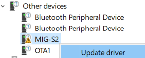
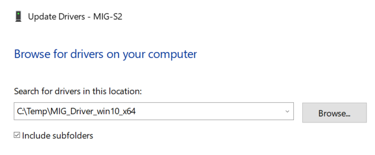
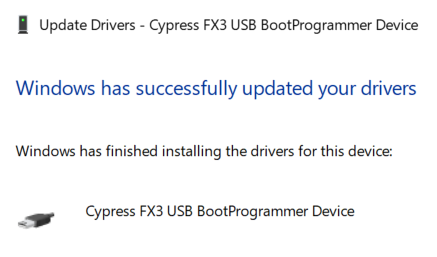
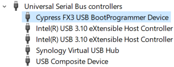
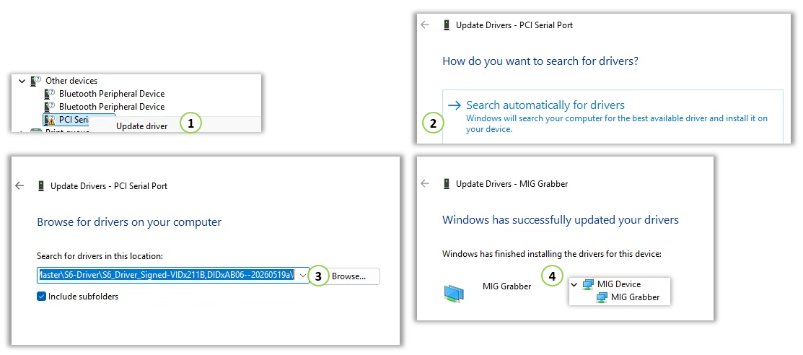

Driver Installation
Visual C++ Redistributable for Visual Studio 2015~2022
Install “Visual C++ Redistributable for Visual Studio 2015~2022”

MIG-S2 Driver Installation
Install the MIG_Driver_win10_x64 package
Install the MIG_Driver_Signed_win10_x64 package




MIG-S3 Driver Installation
MIG-S6 Driver Installation
Install the S6_Driver_Signed_win11_x64 package
